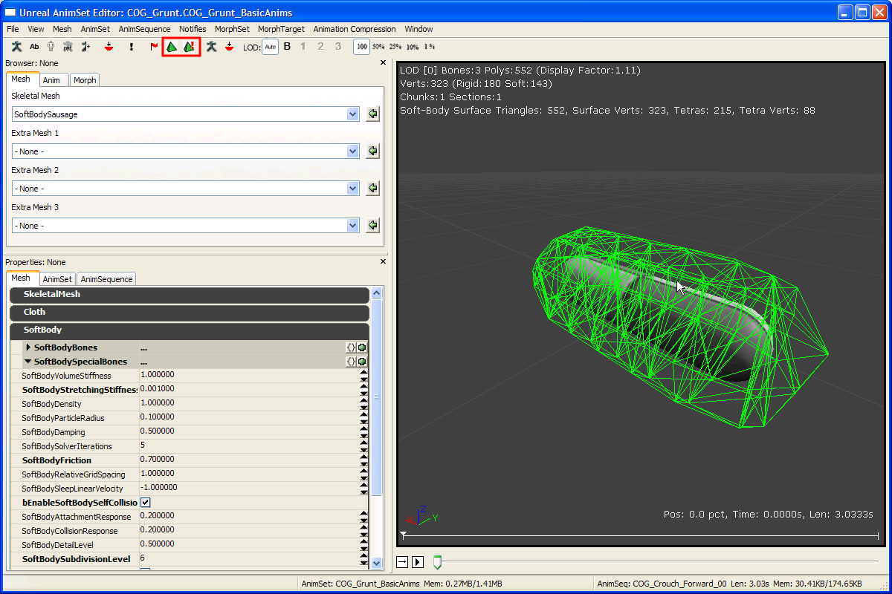
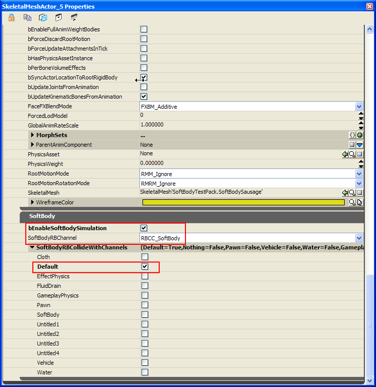

UDN
Search public documentation:
PhysXSoftBodyReferenceJP
English Translation
中国翻译
한국어
Interested in the Unreal Engine?
Visit the Unreal Technology site.
Looking for jobs and company info?
Check out the Epic games site.
Questions about support via UDN?
Contact the UDN Staff
中国翻译
한국어
Interested in the Unreal Engine?
Visit the Unreal Technology site.
Looking for jobs and company info?
Check out the Epic games site.
Questions about support via UDN?
Contact the UDN Staff
PhysX ソフトボディ
ドキュメントの概要: UE3 内での PhysX のソフトボディ シミュレーションの使用方法。 ドキュメントの変更ログ: Bryan Galdrikian により作成。はじめに
クロス (cloth) やメタルクロス (metal-cloth) と同様に、UE3 ではソフトボディ (Soft-body) を骨格メッシュの拡張機能オプションとして提供しています。エディタでの使い方、つまり、レベルにソフトボディメッシュをインポートし、編集および配置する方法も、クロスアセットの扱い方に非常に似ています。このドキュメントを読み進める前に、少なくともクロスの使い方の基本を理解していることを確認してください。このチュートリアルでは主にソフトボディ固有の詳細を取り上げ、クロスと共通する基本的な概念については軽く触れるだけにとどめています。 グローバル的な見方をすれば、この 2 つの機能にも特筆すべき相違点があります。| クロス | ソフトボディ |
|---|---|
| クロスのシミュレーションでは、シミュレートされたメッシュは三角形メッシュで、その頂点は常に骨格メッシュのグラフィック表現 (すなわち、クロスボーンに割り付け (attach) されたもの) のサブセットになります。 | ソフトボディの場合、シミュレートされたメッシュは三角形ではなく四面体 (テトラヘドラ) で構成されたボリュームメッシュです。グラフィックメッシュが剛体に「スキニング」されるの同様に、骨格メッシュのグラフィックメッシュはシミュレート四面体にスキニングされます。 |
| シミュレートされたクロスメッシュの解像度は、その下のグラフィックメッシュの解像度に直接依存します。 | グラフィックメッシュの解像度に関係なく、シミュレートされたメッシュの解像度を制御できます (AnimSet (アニメーションセット) エディタ内で骨格メッシュを編集する際に、ソフトボディのテトラメッシュ生成パラメータを適切に選択します)。 |
| クロスの変形には 次の 2 つの動作に対する抵抗量を制御する 2 つの主要な動作パラメータがあります。 - クロスの伸長 - クロスの曲げ | ソフトボディの変形動作にも、次の 2 つのモーションに対する "stiffness" (剛性) パラメータがあります。 - ソフトボディの伸長 - ソフトボディの体積量の変化 |
- シミュレーション メッシュの内部テアリング (tearing) はサポートされていません。
- "Auto Attachment" (自動アタッチメント)、つまり、物理オブジェクトとの衝突によるソフトボディの自動的な接着はサポートされていません (ただし、"special-bones" (特別なボーン) を使用する接着はサポートされています)。
- ソフトボディのシミュレーション結果と、通常のスキニングとのブレンドはサポートされていません (つまり、"SoftBodyBlendWeight" はありません)。
チュートリアル - ステップ 1 - 3D ツールで骨格メッシュ アセットを作成する
最初のステップは、クロスの用法と同じです。Unreal エディタで入力するために必要なのは、1 つまたは複数の「ソフトボディ ボーン」を頂点に割り当てた骨格メッシュだけです。Max/Maya などの 3D 編集ツール内でメッシュアセットを作成するときに、ソフトボディ シミュレーションの影響を受けるメッシュの頂点を (0 以上のウエイトで) 割り付けるボーンを、必ず 1 つは作成してください。 編集が終了したら、Unreal エディタにインポート可能な形式のファイルに骨格メッシュをエクスポートします。 (詳細については、MasteringUnrealPhysics ページのセクション 15.8 を参照してください。)チュートリアル - 2 - メッシュを UE3 にインポートし、ソフトボディのプロパティを設定する
Generic ブラウザ ウィンドウで、3D 編集ツールで作成した骨格メッシュをインポートします。サムネイルをクリックすると AnimSet (アニメーションセット) エディタが開き、骨格メッシュが表示されます。次の例は、3 つのボーンがつながった骨格メッシュ (“SoftBodySausage”) の表示例です ([View] (表示) > [Show Bone Names] (ボーン名を表示) メニューから可視化)。
プレビュー ウィンドウ左側の [Mesh] (メッシュ) タブの下にある [SoftBody] (ソフトボディ) セクションを展開することで、ソフトボディのプロパティを操作できるようになりました。

骨格メッシュで最も重要なプロパティは上部に表示されています。 bForceCPUSkinning - これは、ソフトボディの頂点が実際にシミュレートされる順番に選択する必要があります。 SoftBodyBones - クロスの場合の "ClothBones" 配列と同様に、この配列に含まれるボーンにより、骨格メッシュのどの部分がソフトボディとしてシミュレートされるかが決まります。ここでは、3 つのボーンすべての名前を入力したので、メッシュ全体が使用されます。 SoftBodyVolume/Stretching-Stiffness -
- これらをすべて最大値の 1.0 に設定すると、非常に硬く、できるだけ原形に近い形状を維持するソフトボディになります。
- volume-stiffness を 1.0 のままにして、stretching-stiffness に非常に低い値 (0.0001 など。ゼロは使用できません) を使用すると、"liquid blob" (流体ブロブ) 動作が発生し、つまり、同じ全体積を維持しながらソフトボディは原形を失うことになります。
- 両方の値を非常に低く設定すると、ソフトボディは原形のほぼ全体を失います。
テトラメッシュのプレビュー
テトラメッシュのプレビューのほか、[Toggle Soft Body Preview Simulation] (ソフトボディのシミュレーション プレビューの切り替え) アイコンをクリックすることでシミュレーション動作もプレビューできます。
テトラメッシュの生成アルゴリズムにはいくつかのパラメータがあり、これらを調整してシミュレーション メッシュの解像度/品質を制御します。
- SoftBodyDetailLevel / SoftBodySubdivisionLevel - ソフトボディメッシュの解像度を制御します。低い値に設定すると、四面体と頂点数が少ないシミュレーションメッシュになり、シミュレーションのコストが下がります。
- bSoftBodyIsoSurface - 有効に設定した場合、現物のメッシュデータを直接使用せず、最初にグラフィックメッシュ周りの iso-surface (等値面) を計算し、これを入力値として使用します。元のグラフィック メッシュに縮退 (退化) した三角形が多数ある場合は、縮退シミュレーション メッシュの出力の原因となるだけでなく、シミュレーションアーチファクトが生じる可能性もあります。このような場合にこのパラメータが役に立ちます。
アタッチメント
クロスで "ClothSpecialBones" を使用するのと同じ方法で (PhysXClothReference 参照)、"SoftBodySpecialBones" を使用してソフトボディを骨格メッシュにアタッチすることができます。簡単にまとめると、以下のステップが必要になります :
- 骨格メッシュに対して、簡単な物理資産を作成する必要があります。このようなアセットを作成するには、Generic ブラウザでソフトボディの骨格メッシュを右クリックし、[Create New Physics Asset] (新しい物理資産を作成する) を選択します。[Minimum Bone Size] (最小ボーンサイズ) を -1 に設定します。
- Phat (物理資産ツール) に骨格メッシュが表示され、各ボーンに衝突ボックスが自動生成されます。このデフォルト状態ではまだ十分でない場合は、衝突ジオメトリのスケール、方向、ブロック動作を追加編集できます。(PhATユーザーガイド を参照)
- これで、アタッチしたソフトボディをレベルに配置できるようになります。!SkeletalMeshActor の SkeletalMeshComponent に、その "PhysicsAsset" プロパティで参照されている物理資産が新規作成され、"bHasPhysicsAssetInstance" が選択されていることを確認します。さらに、SkeletalMeshComponent下にて物理ウェイトを1に設定します。
注意: SoftBodySpecialBones はグラフィックメッシュの頂点を参照しますが、実際にアタッチされる頂点はシミュレートされたテトラメッシュの頂点であり、したがって (クロスとは異なり) 2 つの間で直接の一致関係は成立しません。グラフィックメッシュの頂点がアタッチメントのターゲットであるときは、元の頂点までの距離が骨格メッシュの SoftBodyAttachmentThreshold 以下の場合のみそれが内包する四面体のすべての頂点が代わりに使用されます。したがって、この値を変更することで、四面体頂点が "special bone" からどれだけ離れた距離にアタッチされるかが変わります。さらに、アタッチメントのブレンドやシミュレーションがありません。アタッチメントはバイナリで四面体頂点は、完全にアタッチされるか、完全にシミュレーションされるかのいずれかになります。
チュートリアル - 3 - ソフトボディ レベルを追加する
ソフトボディを レベルに配置するには、Generic ブラウザ ウィンドウで骨格メッシュを選択し、レベルエディタを右クリックして、シーンに骨格メッシュ アクタを追加します。 新規作成したアクタのプロパティ ウィンドウを開きます。
"SkeletalMeshActor" に、追加のカテゴリー "SoftBody" が表示されています。レベル内でソフトボディを適切に実行するには、このシミュレーション チェックボックスを選択します。レベルジオメトリと衝突させるには、上図の 'default' チャンネルなど、衝突相手となる適切なチャンネルを選択します。
その他
- ゲーム実行中に使用可能な 2 つの新規コマンドがあります。
- nxvis softbody_mesh - ソフトボディに関連付けられたテトラメッシュを可視化します。
- nxvis softbody_attachment - 衝突ジオメトリまたはワールドとの接着点を表示します。
- ソフトボディ図形の "stiffness" (硬さ) パラメータの効果は、実は残念なことにシミュレーション時間ステップの大きさに依存します。stiffness の値を変更しなくとも、時間ステップが小さいほどソフトボディは硬直した動作になります。可変シミュレーション時間ステップを使用する場合、実際の経過シミュレーション時間におけるピークにより、ソフトボディが「いきなり」揺れ始めることがあります。
この対策として、固定タイムステップを持つコンパートメントとしてソフトボディを実行することをお勧めします (例えば、エディタで、[View] (表示) > [World Properties] (ワールドプロパティ) > [Physics] (物理) > [!PhysicsTimings] > [!CompartmentTimingSoftBody] > [bFixedTimeStep] を選択します)。